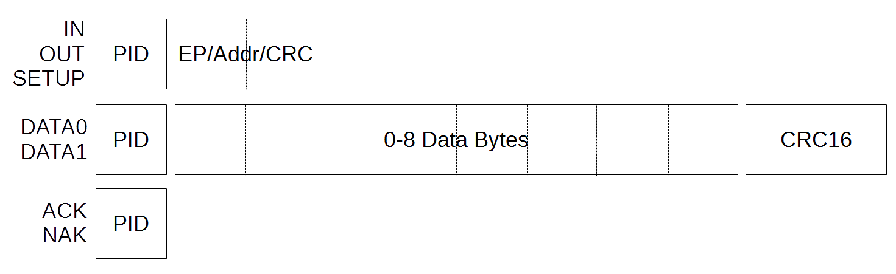
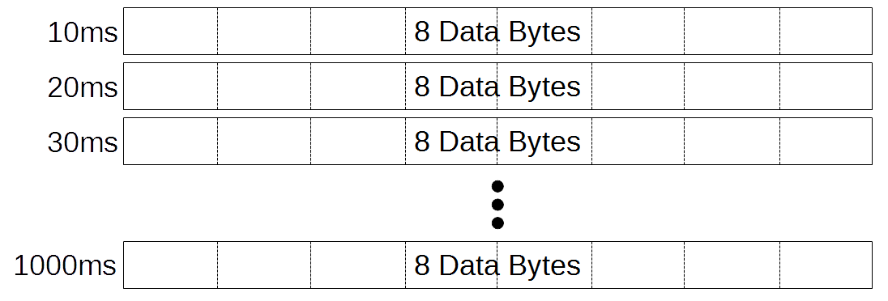

No USB? No Problem!
Grainuum: A software-only USB stack for 48 MHz ARM Cortex M0+ CPUs.
Created by Sean Cross / @xobs
Talk Outline
- Why do this thing?
- How it's made
- What now?
About me
Image © 2014 Wikipedia (No author defined)
About me

Image © 2014 Crowd Supply
About me
Image © 2014 Crowd Supply
Takeaways
- A better understanding low-level USB
- Tricks to improve your embedded programming
- Know what's important and what's not
Why do this thing?
USB is easy*
*Easy for users, that is
C:\> SET BLASTER=A220 I5 D1USB is Everywhere
Photo © 2016 Pauline LimFernvale

Orchard (Burning Man)

Orchard (Burning Man)
Orchard (Burning Man)

Orchard (MIT)
Gaming Controllers
Project Palawan
Can it be done?Other Software Stacks
Other Software Stacks
Embedded hardware is a minefield

Special feature: Different D+/D- banks
© 2013 Freescale (NXP? Qualcomm?)USB LS signalling is 1.5 MHz
On a 48 MHz chip, that gives us 32 clock cycles per bitThe target CPU: Cortex-M0+ @ 48 MHz
Palawan
Palawan, running Grainuum USB stackHow it's made
Grainuum Architecture
USB Electrical
Palawan USB Schematic
Palawan USB Schematic
Palawan USB Traces
Detecting USB
USB Signaling
States
Last part of a USB packetStates
K-stateStates
J-stateStates
SE0-stateStates
SE1-state?Decoding States
| Transition | Value |
|---|---|
| J → J | 0 |
| J → K | 1 |
| K → J | 1 |
| K → K | 0 |
8-bit preamble / sync at start of packet
Data section
SE0 signals EOP
Bit stuffing
Phy: What's important?
| Important | Not Important |
|---|---|
|
|
What about signal integrity?
What about signal integrity?
What about signal integrity?
Faster is not always better
What about signal integrity?
Using a 32.768 kHz Crystal
32768 × 1464 = 47.972352 MHz
Close enough!
Development System Setup
Other Hardware
Other Hardware
Other Hardware
Other Hardware
Low-Level API
int usbPhyReadI(struct GrainuumUSB *usb,
uint8_t samples[11]);
void usbPhyWriteI(struct GrainuumUSB *usb,
const uint8_t buffer[11],
uint32_t count);grainuum-phy-ll.s
void grainuumCaptureI(struct GrainuumUSB *usb,
uint8_t packet[12]);grainuum-phy.cProgramming Tricks
Run from RAM to get cycle-accuracy
.section .ramtextgrainuum-phy-ll.s .data :
{
. = ALIGN(4);
*(.data .data.*)
. = ALIGN(4);
*(.ramtext)
} > ram AT > flashKL02Z32-app.ldUse registers for storing data
mov wpaddr, wdpclrreg // 1 cycle
ldr wnaddr, [sp, #0] // 2 cycles
ldr rval, [rreg] // 1 cycle (Single-cycle port)Hook the writer to the reader for testing
Low-Level C API
void grainuumConnect(struct GrainuumUSB *usb);
void grainuumDisconnect(struct GrainuumUSB *usb);
void grainuumReceivePacket(struct GrainuumUSB *usb); // (weak)
void grainuumCaptureI(struct GrainuumUSB *usb,
uint8_t packet[12]);
USB Packets
Reading: Responding
Tip: Clever array [mis]-alignment
Use GRAINUUM_BUFFERs
Frames: What's important?
| Important | Not Important |
|---|---|
|
|
USB State Machine
USB 2.0 spec figure 8-32, © 2000 Compaq Computer Corporation, Hewlett-Packard Company, Intel Corporation, Lucent Technologies Inc., Microsoft Corporation, NEC Corporation, Koninklijke Philips Electronics N.V.
USB State Machine API
int grainuumSendData(struct GrainuumUSB *usb,
int epnum,
const void *data,
int size);
void grainuumProcess(struct GrainuumUSB *usb,
const uint8_t packet[12]);User Code
struct GrainuumConfig {
get_usb_descriptor_t getDescriptor;
usb_set_config_num_t setConfigNum;
usb_get_buffer_t getReceiveBuffer;
usb_data_in_t receiveData;
usb_data_out_start_t sendDataStarted;
usb_data_out_finish_t sendDataFinished;
void *data;
};| Important | Not Important |
|---|---|
|
|
Setup process

Annoyance: Breaking into the debugger sometimes kills USB
Tip: Global variables are handy
int loop_count;
void loop(void) {
loop_count++;
}(gdb) load
'minimal.elf' has changed; re-reading symbols.
Loading section .text, size 0x1b0 lma 0x5900
Loading section .data, size 0x3a8 lma 0x5ab0
Start address 0x5938, load size 1368
Transfer rate: 5 KB/sec, 684 bytes/write.
(gdb) c
Continuing.
^C
Program received signal SIGINT, Interrupt.
0x0000141c in ?? ()
(gdb) p loop_count
$1 = 91
(gdb)Tip: Easier debugging
(gdb) b chSysLockBreakpoint 1 at 0x3c (49 locations)(gdb) c Continuing. Note: automatically using hardware breakpoints for read-only addresses. Cannot insert hardware breakpoint 1. ... Cannot insert hardware breakpoint 1. Could not insert hardware breakpoints: You may have requested too many hardware breakpoints/watchpoints. (gdb)
Borrow from Javascript
#define debugger asm("bkpt #0")uint8_t USB_Available(uint8_t ep) {
if (rx_buffer_tail == rx_buffer_head) {
debugger;
return 0;
}
if (ep != rx_buffer_eps[rx_buffer_tail]) {
debugger;
return 0;
}
return 1;
}What Now?
Possible Device Types
Possible Device Types
Possible Device Types
Possible Device Types
Possible Device Types

Possible Device Types

So what can we do?
Possible Device Types
[DFU?]Possible Device Types
Possible Device Types
bcdTeapot = 0x0418;
Photo © 2016 Foosn PTE Ltd.
USB HID devices are "easy"

HID is "easy" on Windows
HID Isn't Super Fast
= 800 bytes/sec
Current Project Status
- Reliable bidirectional tranfers
- Common codebase for multiple projects
Port: Palawan
ChibiOS, polling using system timer.Port: Joyboot
Micah Scott / scanlime
Polling in main loop
Port: Love-to-Code
 Tomorrow at 4pm
Tomorrow at 4pm
What About Multi-Threading?
Future work
- Fully-functional updater
- GUI for updating
- More platform testing
Produce Palawan Hardware
...with functioning updater